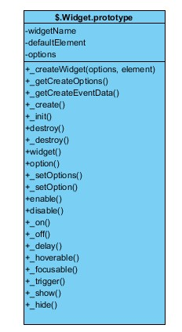

UI Core
说明：下面书写的内容是基于jQuery UI 1.10.0
UI Core在文件jquery.ui.core.js中定义，该文件中定义了以下api
scrollParent()方法
Get the closest ancestor element that is scrollable.
返回某一元素有滚动条的最近祖先节点。
如果该元素position为fixed或直接父节点没有滚动条，则该元素有滚动条的父节点为document
判断直接父节点是否有滚动条分为两种情况，一种是该元素有定位，另一种没有定位，如果是定位，除了判断祖先节点overflow的设置，还需加上定位判断，否则直接判断祖先节点的overflow设置。这里ie与其他浏览器有所不同。
Note: This method only works on jQuery objects containing one element.
zIndex()方法
Get the z-index for an element.
设置或返回元素的zIndex，注意，如果当前元素没有定位（即position不是fixed、relative和absolute）会查找其有定位的祖先节点的zIndex
uniqueId()方法
Generate and apply a unique id for the set of matched elements.
如果元素没有属性id，则设置其id属性值，是以ui-id-开头的
removeUniqueId()方法
Remove ids that were set by .uniqueId() for the set of matched elements.
删除元素的id属性值，注意只删除uniqueId方法加入的id，本身存在的id不删除
选择器（selectors） :data() Selector、:focusable Selector 和 :tabbable Selector
第一个匹配指设置了data的元素；第二个是匹配可以获取焦点的dom元素，匹配规制为：首先该元素可见（即该元素或祖先元素没有设置display为none，并且该元素也不是input为hidden的元素，这种情况的判断是通过$.expr.filters.visible( element )来实现的；再就是该元素以及祖先元素的visibility不能为hidden），其次如果元素为input|select|textarea|button|object，则需判断是否设置了disabled ，如果是a标签，则需判断是否设置了href或tabIndex，对于其他html标签，则只需判断是否设置了tabIndex即可。最后一个匹配规制是在第二个基础上必须设置了tabIndex属性。
看以下例子
$( ":data(color)" ).each(function() {
var element = $( this );
element.css( "backgroundColor", element.data( "color" ) );
});
<div><input value="text input"></div>
<div><a>anchor without href</a></div>
<div><a href="#">anchor with href</a></div>
<div><p>paragraph without tabindex</p></div>
<div><p tabindex="1">paragraph with tabindex</p></div> $( ":focusable" ).css( "border-color", "red" );//1 3 5 匹配成功
<div><input value="no tabindex"></div>
<div><input tabindex="5" value="positive tabindex"></div>
<div><input tabindex="-1" value="negative tabindex"></div> $( ":tabbable" ).css( "border-color", "red" );// 1 2 匹配成功，不设置tabindex时也匹配成功
disableSelection和enableSelection方法
禁止鼠标选择和解除鼠标选择
jQuery ui plugin
$.ui.hasScroll : function( el, a )
判断元素el是否有滚动条，默认判断垂直滚动条，a设为left则判断横向滚动条
Utilities-position
jQuery UI position在文件jquery.ui.position.js中定义，该文件中定义了以下api
首先看源文件jquery.ui.position.js，该文件中主要围绕$.fn.position（该方法扩展了jQuery中的$.fn.position）展开。该文件可脱离jquery ui 单独作为工具类使用。
$.position.scrollbarWidth()
返回滚动条的宽度，该方法只会计算一次，会吧计算的结果缓存到变量中，计算的过程中动态插入了可滚动的div来辅助计算。
$.position.getScrollInfo: function( within )
返回元素垂直和水平滚动条的宽度，返回值格式为：{width:0,height:0}。该方法传入的参数within需要调用$.position.getWithinInfo(element)包装一下。
$.fn.position(options )
设置一个元素相对于另一个元素的位置坐标
参数options有以下几个选项
my：设置该元素定位的参照点，是以该元素来计算坐标的。默认值为: 'center'，相当于'center center'，该选项中有两个值，前一个值指水平方向，后一个指垂直方向。A single value such as "right" will be normalized to "right center", "top" will be normalized to "center top"，还可以设置为以下值："right+10 top-25%"。
at：设置该元素要定位的坐标点，是以目标元素来计算的。默认值为: 'center'，可设置的值与'my'中一样。
of：指参照的目标元素，Type: Selector or Element or jQuery or Event，默认值为null，如果为null则调用jQuery中的方法$.fn.position返回该元素坐标值。
collision：当元素坐标超出window窗口时所采取的策略，有以下几种：flip，翻转（投影）；fit，远离窗口边缘，flipfit，首先翻转，再远离；none，不检测。默认值为"flip"
using：可以设置该选项，传入回调函数
within：碰壁检查参考的DOM元素，指collision的参考值。Type: Selector or Element or jQuery
$.support.offsetFractions
判断css设置像素值是否支持小数
Utilities-widget组件基础类
jQuery UI widget基础类定义在文件jquery.ui.widget.js中，该文件定义了所有UI组件的父类，和组件扩展类，所有的组件都是基于该类实现的。首先看关键方法$.widget
$.widget = function( name, base, prototype )
该方法提供了创建jQuery UI的工厂方法，核心是创建组件构造方法并利用桥接方法把组件构造方法和组件名组装到$对象中。以下是核心代码
//构造函数，分两种情况，直接new constructor，或者调用父类中_createWidget
constructor = $[ namespace ][ name ] = function(options, element) {
if (!this._createWidget) {
return new constructor(options, element);
}
if (arguments.length) {
this._createWidget(options, element);
}
};
//把相关的属性和方法赋给constructor.prototype，主要是父类$.Widget.prototype
//和子类自定义的prototype，还有自己扩展的几个属性
constructor.prototype = $.widget.extend(basePrototype, {
widgetEventPrefix: existingConstructor ? basePrototype.widgetEventPrefix : name
}, prototype, {
constructor: constructor,
namespace: namespace,
widgetName: name,
widgetBaseClass: fullName,
widgetFullName: fullName
});
//把构造函数和组件名桥接，即关联起来
$.widget.bridge(name, constructor);
下面看一下$.widget.bridge的代码
/**
* 把插件名name和构造函数object桥接起来，并放入到$.fn中
* 这样jQuery实例化就能直接调用该方法，比如dialog
* $('#dialog1').dialog();
* @param {type} name
* @param {type} object
* @returns {}
*/
$.widget.bridge = function(name, object) {
var fullName = object.prototype.widgetFullName || name;
$.fn[ name ] = function(options) {
var isMethodCall = typeof options === "string",
args = slice.call(arguments, 1),
returnValue = this;
// allow multiple hashes to be passed on init
//把所有传入的arguments参数放到options中
options = !isMethodCall && args.length ?
$.widget.extend.apply(null, [options].concat(args)) :
options;
if (isMethodCall) {//调用方法、事件、设置属性等
this.each(function() {
var methodValue,
instance = $.data(this, fullName);
if (!instance) {
return $.error("cannot call methods on " + name + " prior to initialization; " +
"attempted to call method '" + options + "'");
}
if (!$.isFunction(instance[options]) || options.charAt(0) === "_") {
return $.error("no such method '" + options + "' for " + name + " widget instance");
}
methodValue = instance[ options ].apply(instance, args);
if (methodValue !== instance && methodValue !== undefined) {
returnValue = methodValue && methodValue.jquery ?
returnValue.pushStack(methodValue.get()) :
methodValue;
return false;
}
});
} else {//直接实例化，或调用实例化对象
this.each(function() {
var instance = $.data(this, fullName);
if (instance) {//如果该实例已创建，则直接调用_init方法
instance.option(options || {})._init();
} else {//否则创建并且放到data hash中
$.data(this, fullName, new object(options, this));
}
});
}
return returnValue;
};
};
看看jQuery UI提供的父类 $.Widget
//定义了创建组件的公共方法
$.Widget = function( /* options, element */ ) {
};
$.Widget._childConstructors = [];
$.Widget.prototype = {
widgetName: "widget",
widgetEventPrefix: "",
defaultElement: "<div>",
options: {//默认提供了两个属性
disabled: false,
// callbacks
create: null
},
/**
* 创建组件会调用该方法
* @param {type} options
* @param {type} element
*/
_createWidget: function(options, element) {
element = $(element || this.defaultElement || this)[ 0 ];
this.element = $(element);
this.uuid = uuid++;
this.eventNamespace = "." + this.widgetName + this.uuid;
this.options = $.widget.extend({},
this.options,
this._getCreateOptions(),
options);
this.bindings = $();
this.hoverable = $();
this.focusable = $();
if (element !== this) {
// 1.9 BC for #7810
// TODO remove dual storage
$.data(element, this.widgetName, this);
$.data(element, this.widgetFullName, this);
this._on(true, this.element, {
remove: function(event) {
if (event.target === element) {
this.destroy();
}
}
});
//设置原生的 document和window对象，注意取法，没有直接用document和window赋值
this.document = $(element.style ?
// element within the document
element.ownerDocument :
// element is window or document
element.document || element);
this.window = $(this.document[0].defaultView || this.document[0].parentWindow);
}
//调用_create方法，这里会切换到$.each( prototype, function( prop, value ) {此处定义的方法，在此处再调用实现组件时创建的_create方法
this._create();
this._trigger("create", null, this._getCreateEventData());
this._init();
},
...
};
除了代码中几个属性和方法，实现jQuery UI的关键父类还提供了以下方法，现逐一介绍
options
选项中默认有两个属性disabled和create。disabled可以设置其显示状态，create可以设置回调函数，即事件，当创建时执行该函数。例如
$('#dialogDemo').dialog({create: function(){console.info(11)}});
$("#dialogDemo").dialog( "option", "disabled", true );//置为灰色
_createWidget
组件构造函数，该方法是$.Widget本身定义的，不需要扩展
_create()
这个方法就是创建widget的方法，在页面调用widget的时候，就会执行此方法，来构建widget。Widget的绝大大多数行为和结构都是在这里创建的。所以要想创建jQuery UI，则必须重写该方法。该方法没有参数。
_getCreateOptions()
自定义创建options，该方法大多数情况下不需重写，除非返回比较复杂的options时，一般情况下在定义的时候即把想要设置的options初始化即可。jquery.ui.spinner.js中实现了方法_getCreateOptions()
_getCreateEventData()
返回要创建的事件数据
_init()
这个方法大多数时候不会被重写，这个方法在构建widget的时候在_create后执行。
当widget被创建的时候，_create()和_init()这两个方法都会被创建，而当页面再次调用widget的时候，则只执行_init()方法
destroy()
Removes the jQuery.Widget functionality completely. This will return the element back to its pre-init state
对于destroy方法，在删除掉该组件的实例化时会被执行！所以在destroy的方法中必须将widget自己加的html结构删除掉。还原成应用widget前的状态。
_destroy()
The public destroy() method cleans up all common data, events, etc. and then delegates out to _destroy() for custom, widget-specific, cleanup.
widget()
返回组件中的DOM元素
option(options)
设置一个或更多选项
_setOptions(options)
当设置option()时调用该方法，该方法根据需要可以重写
_setOption(key, value)
_setOptions调用时，会循环调用该方法。此方法提供了options的属性的设置，一般情况下如果options里面的参数不需要特殊处理（校验，类型转换，以及设置属性的时候触发某一操作等）的时候不需要对此方法进行重写。
enable()
显示组件为正常状态
disable()
置灰组件
_on( [element ], handlers)
给元素绑定事件，即给$('.selector')绑定事件，这样就可以触发该事件
_off( element, eventName )
解除事件
_delay(fn [, delay ])
延迟要执行的函数
_hoverable(element )
设置元素element可以应用样式.ui-state-hover的行为，即鼠标进入mouseenter和离开mouseleave的事件
_focusable(element)
同上，设置焦点行为
_trigger(type [, event ] [, data ])
如果有自定义的事件，可以采用widget为我们封装好的方法来处理_trigger()这个方法来处理，其调用方法 this._trigger(type, event, data)，第一个参数为时间类型，第二个参数为事件event对象，第三个参数为事件要传递的参数。The event name is the widget name + type.
_show( element, option [, callback ] )
组件显示
_hide( element, option [, callback ] )
隐藏组件
下面是一个简单的widget例子，主要重写了_create和_init()方法
//此widget是将textbox进行修饰一下的。自身没有css，采用的是jquery ui css framework的样式
(function($) {
//ui默认采用jquery的ui前缀，后面的是widget名称
$.widget("ui.textboxdecorator", {
//此widget中没有options
options: {
},
_create:function(){
this.hasElement = true;
if(this.element.length == 0){
this.hasElement = false;
return;
}
var currentEl = this.element[0];
//验证是否是需要装饰的元素
if (!(currentEl.tagName.toLowerCase() === "input" || currentEl.tagName.toLowerCase() === "textarea")) {
this.hasElement = false;
return;
}
if (!(currentEl.type.toLowerCase() === "text" || currentEl.type.toLowerCase() === "password")) {
if (currentEl.tagName.toLowerCase() === "input")
this.hasElement = false;
return;
}
},
_init: function() {
if(!this.hasElement){
return;
}
//this.element也就是调用此widget的元素
var e = this.element;
//ui-widget widget基本的样式，ui-state-default。默认状态的样式；ui- corner-all 圆角
this.element.addClass("ui-widget ui-state-default ui-corner-all");
//添加hover效果和active效果
this.element.mouseover(function() {
e.addClass("ui-state-hover");
}).mouseout(function() {
e.removeClass("ui-state-hover");
}).mousedown(function() {
e.addClass("ui-state-active");
}).mouseup(function() {
e.removeClass("ui-state-active");
});
},
//销毁时，移除widget增加的样式
destroy: function() {
this.element.removeClass("ui-widget ui-state-default ui-corner-all ui-state-hover ui-state-active");
}
});
})(jQuery);
运行效果
以下是widget创建和实例化时代码调用过程图

Utilities-Mouse Interaction
鼠标交互定义在文件jquery.ui.mouse.js中，他依赖于jquery.ui.widget.js，作为其他组件的抽象类来构建，其他组件有鼠标交互行为需要继承实现该类。方法_mouseStart(), _mouseDrag(), _mouseStop(), and _mouseCapture()需要继承该类的组件实现。下面的代码给出怎样继承该类。
$.widget("ui.draggable", $.ui.mouse, {});
下面看一下该抽象类中提供的API
$.ui.mouse API
cancel属性
设置默认要阻止的的元素，该类中默认值为：input,textarea,button,select,option。例如
$( ".selector" ).mouse({ cancel: ".title" });
delay属性
延迟执行
distance属性
设置按下鼠标移动多少像素才执行鼠标交互行为
_mouseInit()方法
初始化鼠标事件，必须在widget's _create() method中调用。
_mouseDestroy()方法
销毁鼠标事件，必须在widget's _destroy() method中调用。
_mouseDown()方法
鼠标按下触发该方法
_mouseMove()方法
鼠标移动
_mouseUp()方法
鼠标抬起
_mouseDistanceMet()方法
鼠标移动的距离是否满足
_mouseDelayMet()方法
延迟的时间是否满足
_mouseStart()方法
鼠标开始
_mouseDrag()方法
鼠标拖拽
_mouseStop()方法
鼠标按下移动停止
_mouseCapture()方法
处理鼠标交互是否开始，默认返回true。
jQuery UI 相关组件Widgets
Accordion
折叠展开组件，依赖jquery.ui.core.js和jquery.ui.widget.js
Autocomplete
下拉框自动完成组件，可以扩展该组件实现checkbox组件，见例子中ui.combobox组件。Autocomplete组件依赖于：jquery.ui.core.js、jquery.ui.widget.js、jquery.ui.position.js和 jquery.ui.menu.js
Button
jQuery UI 通用button按钮，依赖于jquery.ui.core.js和jquery.ui.widget.js
Datepicker
该组件依赖jquery.ui.core.js，并没有依赖jquery.ui.widget.js，也就是说不是基于$.Widget构建的，而且在实现过程中用到了单例模式，这是一种思想，在创建其他组件是也可以参考该单例实现，比如colorpicker等。另外，网上还有基于他开发的插件Timepicker，参见jquery.ui.timepicker.js。
Dialog
对话框组件，依赖jquery.ui.core.js、jquery.ui.widget.js、jquery.ui.button.js、jquery.ui.draggable.js、 jquery.ui.mouse.js、jquery.ui.position.js和jquery.ui.resizable.js
Menu
该类实现菜单功能，依赖jquery.ui.core.js、jquery.ui.widget.js和 jquery.ui.position.js
Progressbar
进度条组件，依赖jquery.ui.core.js和jquery.ui.widget.js
Slider
滑动条组件，依赖jquery.ui.core.js、jquery.ui.mouse.js和jquery.ui.widget.js
Spinner
下拉列表，自增自减组件，依赖 jquery.ui.core.js、jquery.ui.widget.js和 jquery.ui.button.js
Tabs
标签组件，依赖jquery.ui.core.js和 jquery.ui.widget.js
Tooltip
提示性组件，依赖jquery.ui.core.js、jquery.ui.widget.js和 jquery.ui.position.js
jQuery UI 中实现了鼠标交互（Mouse Interaction）的组件Widgets
Draggable
定义可拖拽的元素，依赖jquery.ui.core.js、jquery.ui.mouse.js和 jquery.ui.widget.js
Droppable
创建拖拽的目标元素，依赖jquery.ui.core.js、jquery.ui.widget.js、jquery.ui.mouse.js和jquery.ui.draggable.js
Resizable
创建可改变大小的元素，依赖jquery.ui.core.js、jquery.ui.mouse.js和 jquery.ui.widget.js
Selectable
设置可选择的元素的样式和效果，依赖jquery.ui.core.js、jquery.ui.mouse.js和jquery.ui.widget.js
Sortable
创建可以动态改变序列的元素，依赖jquery.ui.core.js、jquery.ui.mouse.js和 jquery.ui.widget.js
Effects（jQuery UI中的效果）
jQuery UI 提供了几种默认的动画效果。首先看effects core 文件jquery.ui.effect.js。该文件中首先定义了jQuery.Color类，下面看看这个类是干什么的以及他的用法。
组件中部分方法和属性详解
关于widget中option的设置和获取，下面以例子来分析
例子1：dialog组件 option width的测试
从运行结果以及代码跟踪来看，对于重新设置option时，首先执行桥接函数中的
instance.option( options || {} )._init();
然后分别调用_setOptions和_setOption方法，所以组件中会重新实现该方法，来提供option对应的功能，如果不提供，则
$('#optionsDemo').jQuery.Widget('option', 'width', 500);
不会起作用。对于一些属性，虽然没有直接提供，但是间接的实现了该功能，比如dialog中的width，重新设置该值时会重新执行_size()方法。如果不想提供该option的重新设置功能，只是在创建时传入参数，则不实现该option对应的功能即可。
例子2：menu组件 option position的测试
从运行结果来看，menu组件中并没有实现position的重新设置功能
参考资料